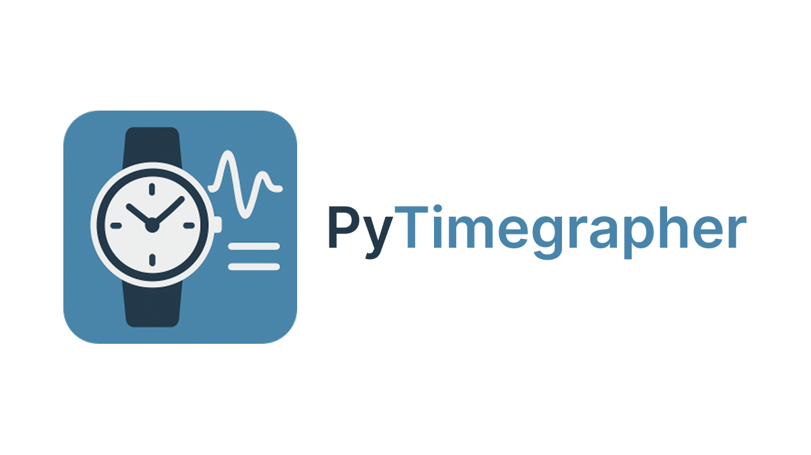
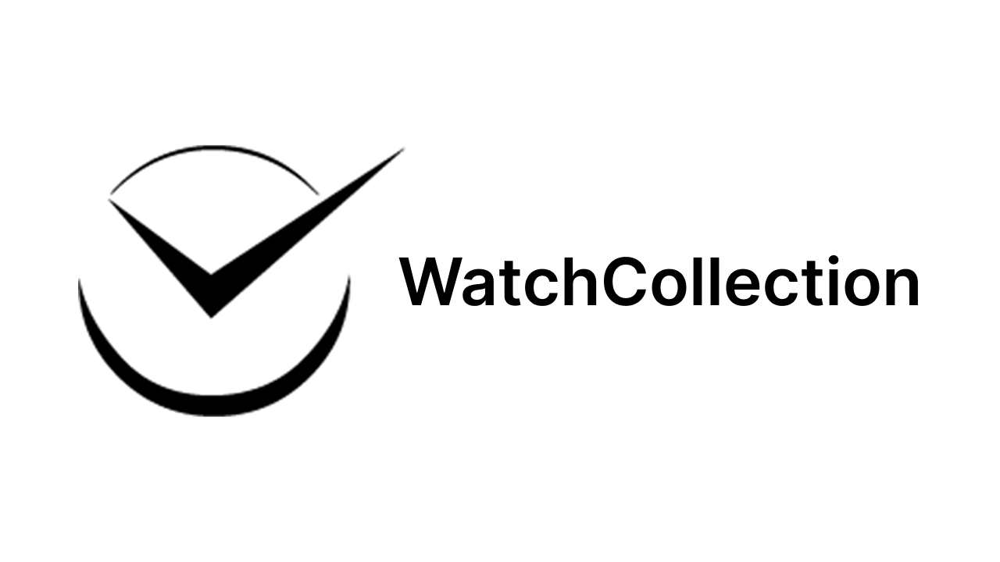

Hi, I'm Daniele Monaldi
Software developer passionate about technology, cars, and watches. I create innovative digital solutions with an eye for detail.
Recent Projects
A selection of my most recent work in software development


WatchCollection
Desktop AppAcademic Project
Ontology-based app for managing a watch collection
Java

Gamezen
Mobile AppAcademic Project
Android app for an e-commerce of board games. Project for my High School Diploma
JavaAndroid
My Passions
Discover what I'm passionate about and what motivates me every day